Contact
 orcid.org/0000-0001-6631-2566
orcid.org/0000-0001-6631-2566
- Department of Astrophysical Sciences
- Princeton University
- 4 Ivy Lane
- Princeton, NJ 08544, USA
X-ray Winds
ionization structure of Seyfert 2 galaxy IRAS 18325-5926 with Chandra
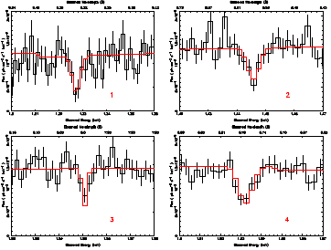I worked with Julia Lee at Harvard University (2009) to study the gas kinematics and ionization properties around the Seyfert 2 AGN IRAS 18325-5926 by analyzing Chandra High Energy transmission grating spectra. We detected two blue-shifted ionized winds. We also studied the the broad Fe K emission profile to understand the properties of the accretion disk.
Inverse-Compton Ghosts
powerful double-lobed radio galaxies switched off
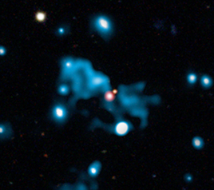I worked with Andy Fabian and Katherine Blundell at Cambridge and Oxford Universities (2011) to study what happens when powerful, jetted galaxies switch their jets off. We developed an analytic, physical model for the evolution of the lobe emission at radio and X-ray energies. During jet activity, a double radio source emits synchrotron radiation in the radio and X-ray emission due to inverse-Compton (IC) upscattering by gamma~10^3 electrons of the cosmic microwave background. After the jets switch off, the radio luminosity (due to higher gamma electrons) falls faster than the X-ray luminosity and for some time the source appears as an IC ghost of a radio galaxy before becoming completely undetectable in the X-ray. We predicted the observability of IC ghosts and their volume-filling factors in the universe (paper 1). We also studied two sources HDF 130 and 6C 0905+3955, which appear to be IC ghosts (paper 2).
Supermassive Black Holes
cosmological growth and feedback
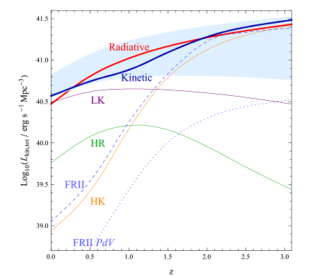I continued my work with I worked with Andy Fabian and Katherine Blundell on our model of radio mode feedback to explore the amount of kinetic feedback from SMBHs in the Universe across cosmological time through constraints given by the black hole mass function at z=0 and the X-ray luminosity function of active galactic nuclei (AGN). FR II feedback is found to be a significant mode of feedback above redshifts z~1.5, which has not been highlighted by previous studies.
Tully-Fisher
for 25,000 galaxies as function of environment
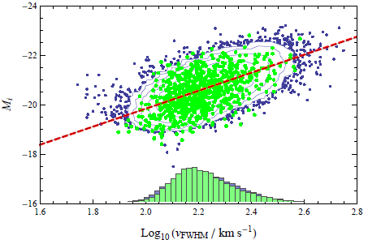I worked with Andy Green, Karl Glazebrook, and Max Malacari at Swinburne University, Australia (2012) to recover Tully-Fisher relationships (TFRs) from SDSS galaxies. A priori it is not clear whether we can construct accurate TFRs given the small 3" diameter of the fibres used for SDSS spectroscopic measurements. However, we showed by modelling the H-alpha emission profile as observed through a 3" aperture that for galaxies at appropriate redshifts (z >0.045) the fibres sample enough of the disc to statistically recover the TFR. We found no statistically significant dependence of the TFR on projected neighbour density. We developed a robust method to use SDSS to study the TFR as a function of any third variable and distinguish between physical and aperture effects.
Discontinuous Galerkin
on moving meshes
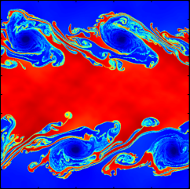I have extended the Discontinuous Galerkin (DG) method for solving the equations of fluid dynamics numerically to a moving mesh in Arepo. The DG approach uses local basis functions to represent the solution on a cell rather than the extended stencils of finite volume approaches and is thus more parallelizable to higher order accuracy. The method also handles magnetic fields in a locally divergence-free way, unlike standard finite volume methods on unstructured grids. To the right is a picture of the Kelvin-Helmholtz instability simulated with the method.
Constrained Transport for MHD
on unstructured and moving meshes
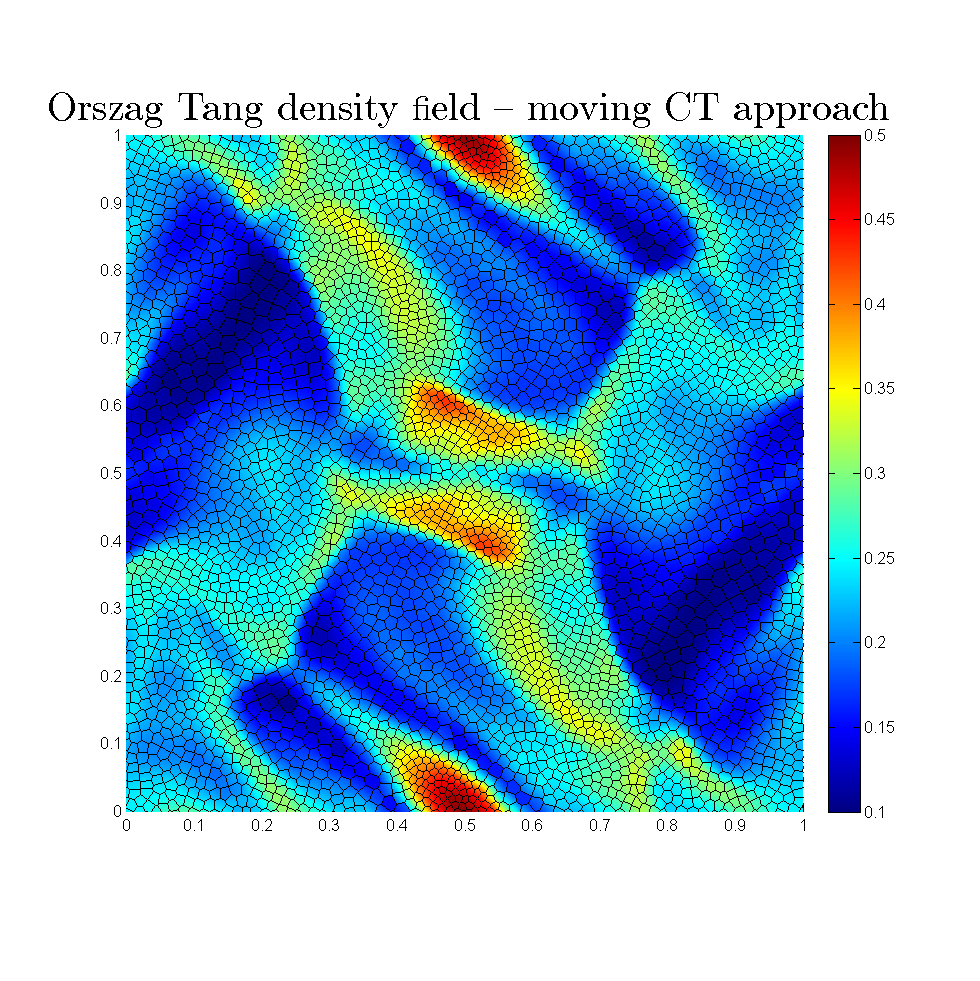 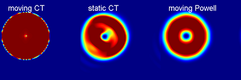I have developed a constrained transport (CT) algorithm for solving the magnetohydrodynamic (MHD) equations on arbitrary static and moving meshes, which keeps the numerical representation of the magnetic field divergence free to machine precision. Such a method greatly improves the accuracy and stability with previous methods, which may be non-conservative and use cleaning schemes, or are restricted to static meshes. Coupling the CT method with the moving mesh approach greatly reduces advection errors and allows pure advection solutions to be preserved to machine precision. Shown are the Orszag-Tang test (well-known test problem of decaying supersonic turbulence) simulated with the moving CT method using an HLLD flux solver, and an advected field loop (energy density is plotted) compared to a moving mesh Powell cleaning scheme approach and the static mesh CT approach. Only the moving CT approach is able to advect the solution exactly without artefacts.
Quantum SPH
for the non-linear Schrödinger equations
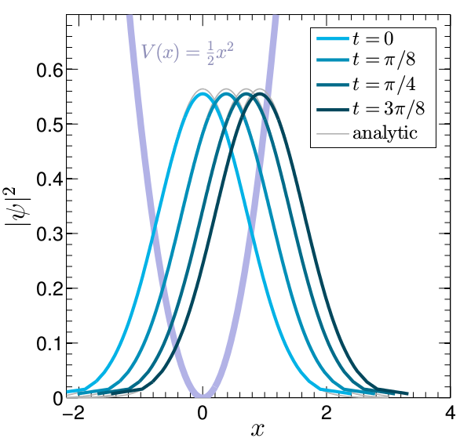I have depeveloped, with Sauro Succi, a Smoothed-Particle Hydrodynamics (SPH) for solving the non-linear Schrodinger equations in Madelung (fluid) form. These equations describe Bose-Einstein condensates, non-linear optics, and alternate models for dark matter.
Moving Mesh Vector Potential CTA
for MHD
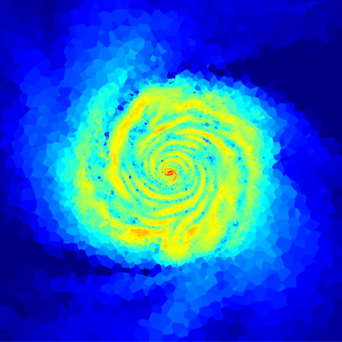I have developed an efficient, cell-centered vector potential formulation of the constraint transport (CT) scheme for accurate simulation of the magnetohydrodynamics (MHD) equations in the moving-mesh Arepo code. Shown in the image is a simulation of the magnetic energy in a magnetic disk galaxy.
Tidal Disruption Events
simulations
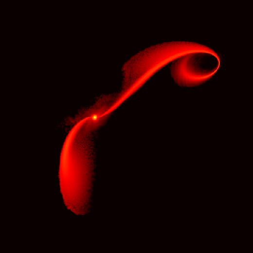Work (in prep.) win James Guillochon on simulating tidal disruption events using a moving mesh, which allows one to simulate the entire system in a single, self-consistent frame and study the late-term behaviour of the disruption.
Integer Lattice
for Vlasov-Poisson (6D)
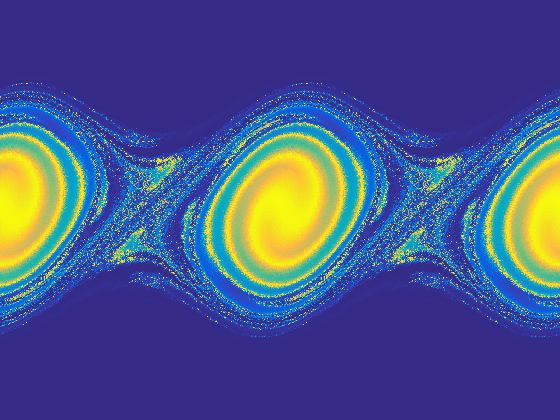I developed a new, very simple and fast numerical method for solving the 6D Vlasov-Poisson equations for collisionless self-gravitating systems such as cold dark matter. The method can resolve fine-grained phase-space structure and obeys the Poincare Recurrence theorem. Memory scaling goes as N^4 instead of N^6.
Primordial Magnetic Fields
in cosmological settings
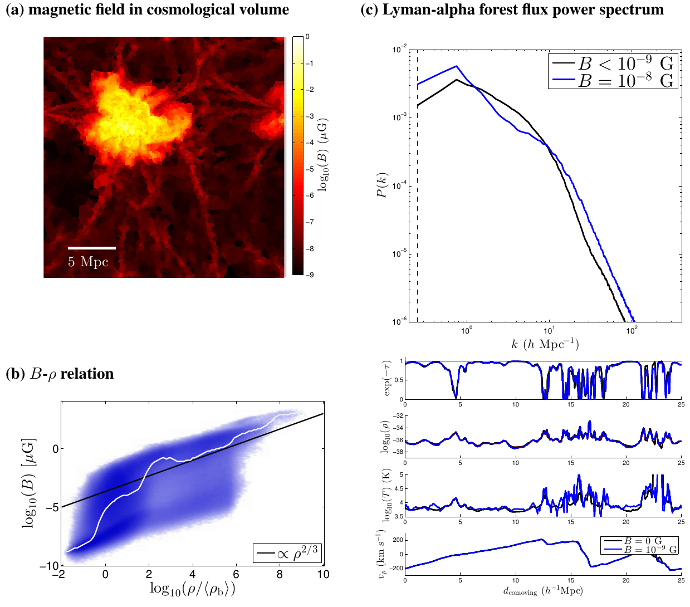Work (in prep.) in collaboration with students Sruthi Narayanan and Alex Gurvich on the effects of the primordial magnetic field on structure formation and Lyman-alpha power-spectra statistics.
Star Formation
in magneto-gravo-turbulence
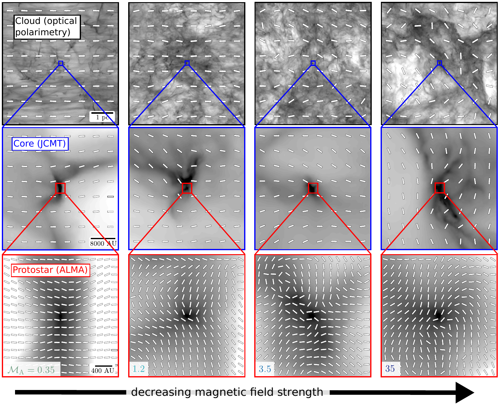I have studied the magnetic topology problem of the collapse of star forming cores from large (pc) cloud scales to a few AU relevant for ALMA observations. The work identifies 2 channels of star formation, based on whether turbulent pressure or magnetic pressure dominates in the large-scale environment. In turbulent-dominated systems, collapse is isotropic, with chaotic field lines, but not self-similar, with magnetic field strength scaling as density^(2/3). In the strongly magnetized case, the magnetic fields control collapse, leanding to a classic hourglass shape magnetic field morphology, and magnetic field strength scaling as density^(1/2), with plasma beta unity.
Axion Dark Matter
quantum turbulent properties
Ultralight bosonic scalar field (axion) dark matter is a viable alternative to the standard cold dark matter (CDM) paradigm, as it makes the same large-scale predictions as CDM and potentially overcomes CDM's small-scale problems via a galaxy-scale de Broglie wavelength. Here I investigated some unexplored theoretical aspects of relaxed Bose-Einstein condensate (axion) dark matter (BECDM) haloes using state-of-the-art simulations.
Schrödinger to Vlasov
emergence of classical behavior from quantum mechanics
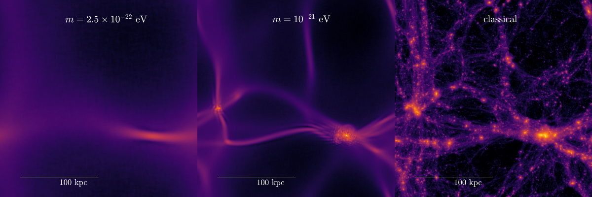The Schrödinger-Poisson equations self-gravitating superfluid describe systems such as axion dark matter. We show that in the limit of large axion mass these 3D equations for the wavefunction converge to the Vlasov-Poisson system for 6D collisionless matter (e.g. cold dark matter) in the sense that the self-potential converges as (m^-2) and the solution encodes rich phase-space information.
Solitons from early universe scalar fields
formation, gravitational clustering and interactions of solitons
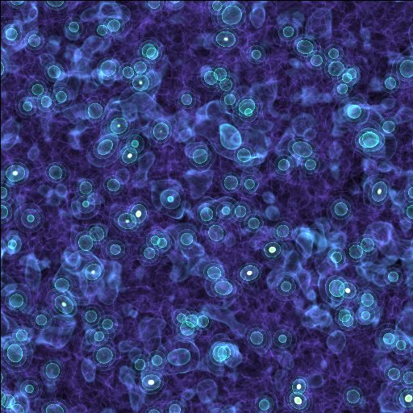Work with Mustafa A. Amin (Rice). We studied the non-equilibrium dynamics of an unstable scalar field in the universe, which results in formation and gravitational clustering of solitons. Rapid formation of a large number of solitons is driven by attractive self-interactions of the field, after which gravity clusters them together, leading to mergers, scatterings and formation of soliton binaries.
Dynamical Friction
in fuzzy dark matter
Work led by Princeton graduate student Lachlan Lancaster on calculating different regimes of fuzzy dark matter dynamical friction, and applications to astrophysical systems.
Supersonic turbulence
dense structures in compressible turbulence
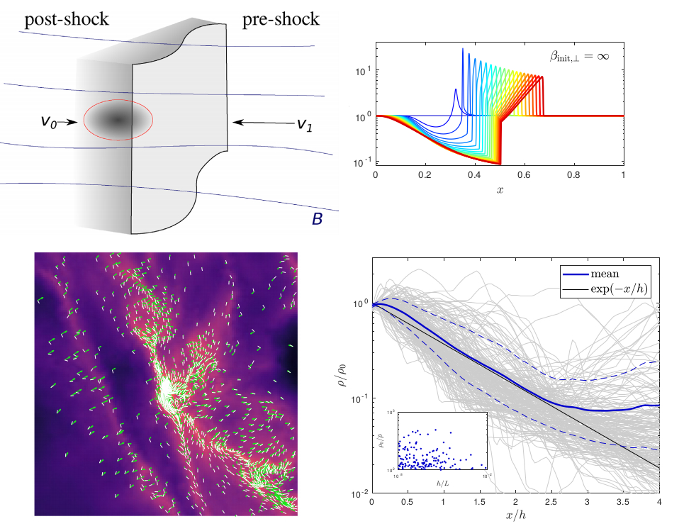We develop theory for the densest structures in supersonic, magnetized turbulence and find they form a network of transient stratified shocks aligned perpendicularly to the local magnetic field, extending ideas of Robertson & Goldreich 2018. Our results have implications for the inefficiency of star formation.
Turbulence Markov Model
to describe non-lognormal density distributions
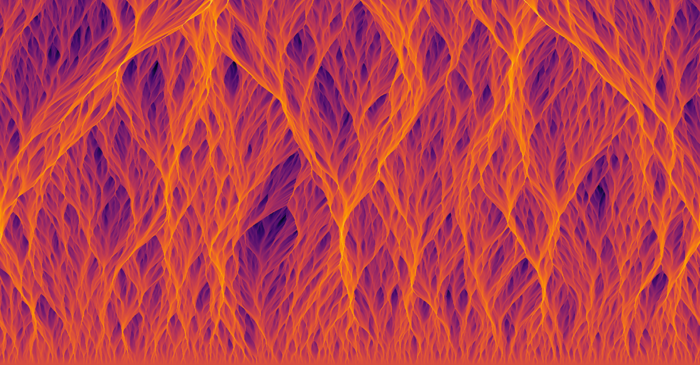I developed theory with Blakesley Burkhart to describe how transient density structures evolve in the turbulent interstellar medium in a biased `Random Walk' sort of way that gives rise to a skewed distribution of gas densities, based on the framework developed by Mohammad Safarzadeh.
How Dark Matter shapes First Galaxies
and how to tell if dark matter is fuzzy, warm, or cold
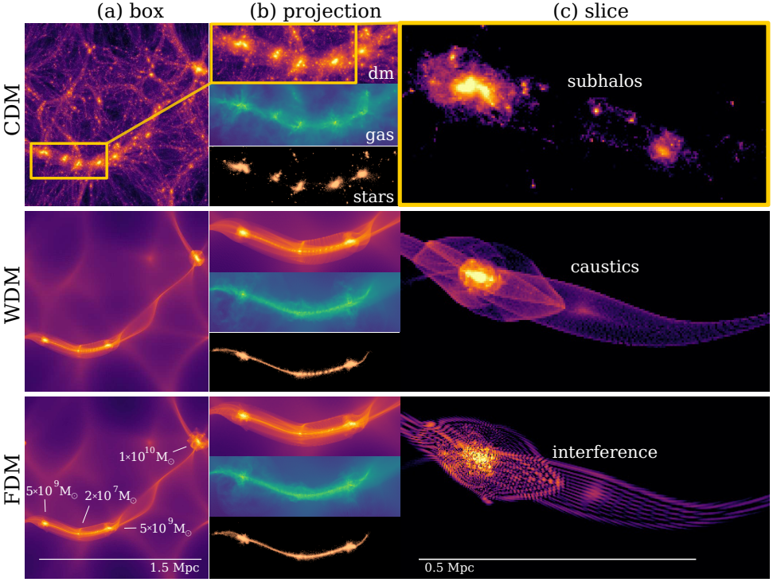With supercomputer simulations on TACC Stampede2, we simulated what galaxies would like in fuzzy dark matter model for the first time, taking into account dark matter quantum wave effects and baryonic coupling & feedback physics. We compare results against WDM and CDM simulations, and show how next-gen space telescopes like JWST may reveal the small-scale physical nature of the elusive dark matter particle.